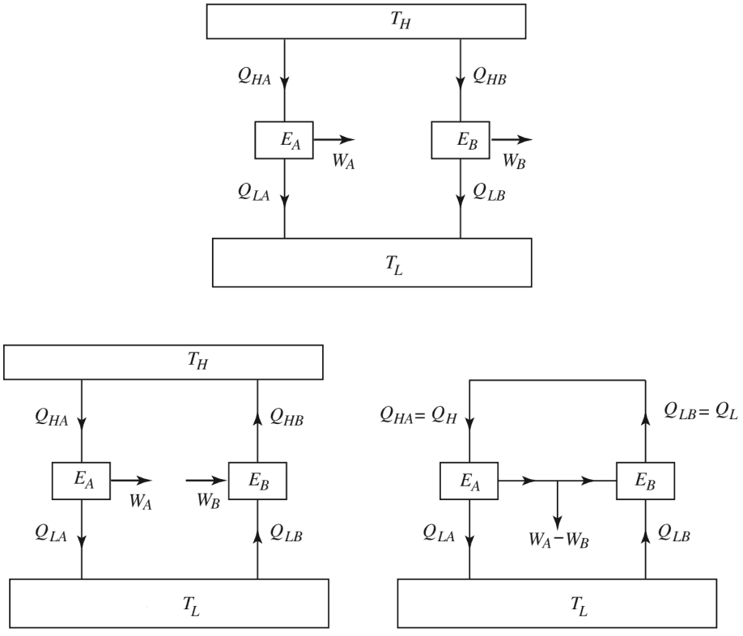

Carnot's theorem
The second law of thermodynamics shows that given a source of heat, only a portion of the heat can be converted to work in a heat-work cycle. The rest must be rejected to a heat sink. Thus, it is impossible to have a heat engine that is 100% efficient and even the most perfect cycle must be less 1. Carnot's theorem, also known as Carnot's rule, or the Carnot principle, can be stated as follows:
No heat engine operating between two heat reservoirs can be more efficient than a reversible heat engine operating between the same two reservoirs.
The simplest way to prove this theorem is to consider the scenario shown below, in which we have an irreversible engine, EA as well as a reversible engine, EB operating between the same reservoirs TH and TC. They both draw the same amount of heat QH = QHB = QHAfrom the high temperature reservoir, assuming the irreversible heat engine to possess higher efficiency than the reversible one ηA > ηB
WA/ QHA > WB/QHB
then the irreversible engine produces more work: WA > WB than that of the reversible engine, while exchanging heat with a single reservoir TL.
Note that the reversible engine by its nature can operate in reverse, i.e. if we use some of the work output (WA equal to WB) from the irreversible engine in order to drive the reversible engine then it will operate as a heat pump, transferring heat QH to the high temperature reservoir, as shown in the diagram. This violates the Kelvin-Planck statement of the second law, by producing a net work WA = WB while exchanging heat with a single reservoir at TL. Hence the assumption that ηA > ηB is wrong.
Corollary of carnot's theorem
All reversible heat engines operating between the same two heat reservoirs must have the same efficiency.
If we refer to the same diagram above, but with both engines EA and EB be reversible. Let us assume ηA > ηB. Similarly to the procedure outlined in the previous section, if EB is reverse to run say, as a heat pump using some part of the work output WA of heat engine, EA, wee see that the combined system of het pump, EB, becomes a perpetual motion machine of type two. So ηA cannot be greater than ηB. Therefore
ηA = ηB
Since the efficiencies of all reversible rengines operating between the same reservoirs are the same, the efficiency of a reversible engine is independent of the nature of the working substance undergoing the cycle.